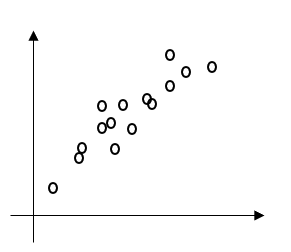
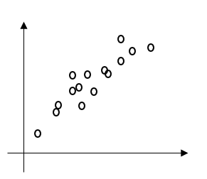

35.以下の重みベクトルw、新しく得られた入力ベクトルxについて、次の計算規則により
定式化されるパーセプトロンを用いて、xが分類されるクラスとして適切な選択肢を1つ選べ。

|
A. -0.4 B. 0 C. 0.1 D. 0.8 |
答え Ｄ
【解説】
| 設問の図は、正の相関が比較的強いことから、選択肢の中では0.8（Ｄ）が適切です。 |
|
35.以下の重みベクトルw、新しく得られた入力ベクトルxについて、次の計算規則により

答え Ｄ 【解説】
|
 戻る
戻る 一覧へ
一覧へ